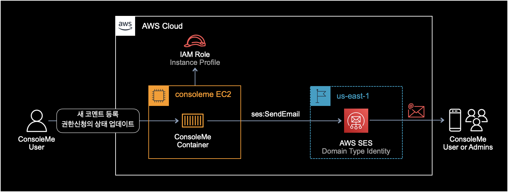
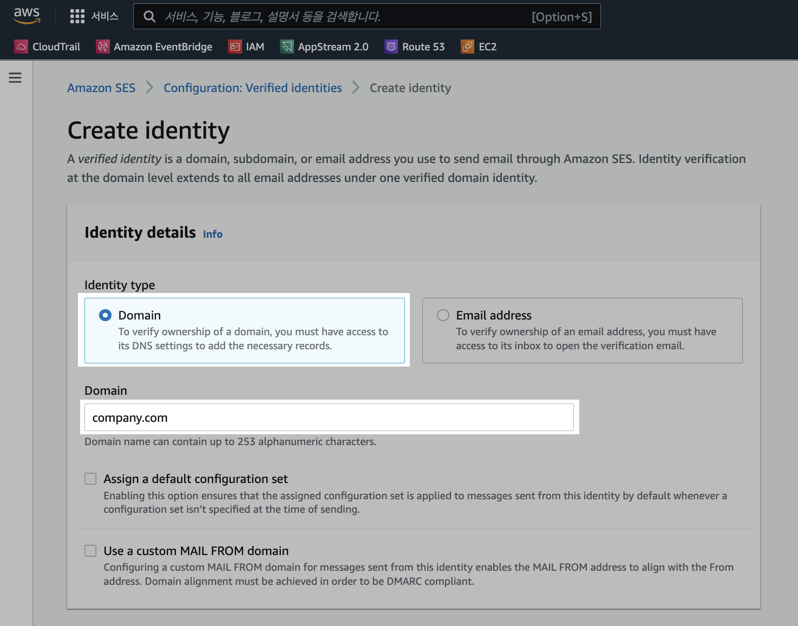
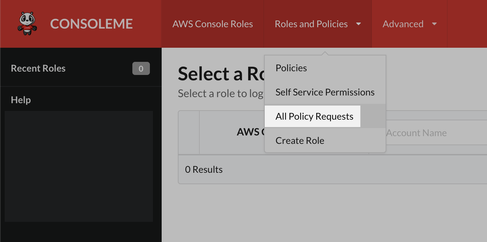

ConsoleMe SES 연동
개요
ConsoleMe는 기본적으로 AWS SES를 연동을 통해 메일 알림Email Notification 기능을 지원한다.
메일 알림을 받고 싶을 경우, ConsoleMe와 AWS SES간에 연동 설정하는 방법을 소개한다.
ConsoleMe가 AWS SES를 통해 메일을 보내는 아키텍쳐는 다음과 같다.

설정방법
SES 생성
먼저 도메인 주소의 SES Identity를 생성한다.
이미 생성해서 사용하고 있는 SES Identity가 있을 경우, AWS SES 생성 과정은 건너 뛰면 된다.

위 사진처럼 반드시 Identity type을 Domain으로 설정해서 생성해야한다.
생성한 도메인 기반의 SES Identity는 인증을 받은 상태여야 한다.
IAM 설정
ConsoleME EC2 인스턴스가 IAM Role을 Instance Profile로 사용하는 구성이다.
아래는 ConsoleMe EC2가 사용하는 IAM Role의 전체 권한 중 SES와 관련된 일부 권한만 뽑아낸 내용이다.
{
"Statement": [
{
... TRUNCATED ...
},
{
"Sid": "SendEmailNotificationFromConsoleMe",
"Effect": "Allow",
"Action": [
"ses:SendEmail",
"ses:SendRawEmail"
],
"Resource": "arn:aws:ses:us-east-1:123456789012:identity/company-name.com",
"Condition": {
"StringLike": {
"ses:FromAddress": [
"*@company-name.com"
]
}
}
},
{
... TRUNCATED ...
}
],
"Version": "2012-10-17"
}
ConsoleMe EC2는 메일 발송을 위해 ses:SendEmail과 ses:SendRawEmail 권한이 필요하다.
Resource 값에는 이전 과정에서 생성한 도메인 기반의 SES Identity의 아마존 리소스 주소(ARN)를 입력한다.
Config 수정
SES 설정
# SES configuration is necessary for ConsoleMe to send e-mails to your users. ConsoleMe sends e-mails to notify
# administrators and requesters about policy requests applicable to them.
ses:
support_reference: "Please contact us at consoleme@example.com if you have any questions or concerns."
arn: arn:aws:ses:us-east-1:123456789012:identity/company-name.com
region: us-east-1
consoleme:
name: ConsoleMe
sender: bob@company-name.com
SES 설정 파라미터
- support_reference : 메일 내용 맨 아래에 표시되는 추가 안내 멘트.
- arn : SES Identity의 아마존 리소스 주소.
- region : AWS SES Identity의 리전 이름.
region설정값을 생략할 경우, ConsoleMe에서 기본값인 us-east-1로 자동지정한다. - consoleme.name : 보내는 사람의 이름. 이메일 제목의 맨 앞에 표시된다.
- consoleme.sender : ConsoleMe가 이메일을 보낼 때 찍히는 발신자의 메일 주소.
sender값에 입력한 메일 주소는 AWS SES의 인증을 받은 상태여야 한다.
관리자 메일링 리스트 설정
ConsoleMe 설정파일에서 fallback_policy_request_reviewers 그룹에 포함된 메일 목록은 ConsoleMe 메일 알람을 받을 관리자 메일링 리스트를 의미한다.
groups:
...
fallback_policy_request_reviewers:
- alice@company-name.com
- bob@company-name.com
- carol@company-name.com
설정파일의 fallback_policy_request_reviewers 값은 policies.py 코드에서 참조한다.
# lib/policies.py
async def send_communications_new_comment(
extended_request: ExtendedRequestModel, user: str, to_addresses=None
):
"""
Send an email for a new comment.
Note: until ABAC work is completed, if to_addresses is empty, we will send an email to
fallback reviewers
:param extended_request: ExtendedRequestModel
:param user: user making the comment
:param to_addresses: List of addresses to send the email to
:return:
"""
if not to_addresses:
to_addresses = config.get("groups.fallback_policy_request_reviewers", [])
request_uri = await get_policy_request_uri_v2(extended_request)
await send_new_comment_notification(
extended_request, to_addresses, user, request_uri
)
policies.py 코드에서 send_communications_new_comment 함수는 새 코멘트 등록에 대한 알림 메일을 발송하는 함수다.
메일 테스트
ConsoleMe는 다음과 같은 상황이 발생할 때 메일을 발송한다.
- 권한 신청request 페이지에서 새 댓글comment이 등록된 경우
- 권한 신청request의 상태가 취소cancel, 거부reject, 승인approve 중 하나로 변경된 경우

권한 요청 페이지All Policy Requests에서 테스트용 Comment를 남기거나 테스트용 권한 리퀘스트의 상태를 변경해보며 알림 메일이 잘 보내지는지 테스트 해본다.
ConsoleMe가 AWS SES를 통해 메일을 발송할 때 ConsoleMe 컨테이너가 관련 로그를 찍는다.
테스트 메일 발송하기 전에 ConsoleMe 도커 컨테이너에 로그 모니터링을 걸어놓고 발송 테스트를 해보자.
$ docker logs -f consoleme | grep ses
내 경우 ConsoleMe EC2에서 사용하는 Instance Profile(IAM Role)에 SES 메일 발송ses:SendEmail 권한이 잘못 설정되어 있어서 에러를 경험했다.
ses:SendEmail 권한 에러 발생시 ConsoleMe 컨테이너가 출력하는 에러 로그는 다음과 같다.
{
"asctime": "2022-05-19T09:14:43Z+0000",
"name": "consoleme",
"processName": "MainProcess",
"filename": "ses.py",
"funcName": "send_email",
"levelname": "ERROR",
"lineno": 83,
"module": "ses",
"threadName": "MainThread",
"message": "Exception sending email",
"to_user": ["bob@company-name.com"],
"region": "us-east-1",
"function": "consoleme.lib.ses.send_email",
"sender": "alice@company-name.com",
"subject": "ConsoleMe: Policy change request for arn:aws:s3:::example-bucket has been updated to approved and committed",
"exc_info": "Traceback (most recent call last):\n File \"/apps/consoleme/consoleme/lib/ses.py\", line 67, in send_email\n response = await sync_to_async(client.send_email)(\n File \"/usr/local/lib/python3.8/site-packages/asgiref/sync.py\", line 444, in __call__\n ret = await asyncio.wait_for(future, timeout=None)\n File \"/usr/local/lib/python3.8/asyncio/tasks.py\", line 455, in wait_for\n return await fut\n File \"/usr/local/lib/python3.8/concurrent/futures/thread.py\", line 57, in run\n result = self.fn(*self.args, **self.kwargs)\n File \"/usr/local/lib/python3.8/site-packages/asgiref/sync.py\", line 486, in thread_handler\n return func(*args, **kwargs)\n File \"/usr/local/lib/python3.8/site-packages/botocore/client.py\", line 386, in _api_call\n return self._make_api_call(operation_name, kwargs)\n File \"/usr/local/lib/python3.8/site-packages/botocore/client.py\", line 705, in _make_api_call\n raise error_class(parsed_response, operation_name)\nbotocore.exceptions.ClientError: An error occurred (AccessDenied) when calling the SendEmail operation: User `arn:aws:sts::123456789012:assumed-role/consoleme-instance-profile/i-0a123bcd4e5678901' is not authorized to perform `ses:SendEmail' on resource `arn:aws:ses:us-east-1:123456789012:identity/company-name.com'",
"eventTime": "2022-05-19T02:12:29.940004-07:00",
"hostname": "12a34567bc89",
"timestamp": "2022-05-19T09:14:43Z+0000"
}
전체 에러 로그 내용 중 중요한 부분은 ConsoleMe EC2에서 사용하는 IAM Role에 ses:SendEmail 권한이 부여되어 있지 않아서 메일 발송이 안되었다는 내용이다.
User `arn:aws:sts::123456789012:assumed-role/consoleme-instance-profile/i-0a123bcd4e5678901' is not authorized to perform `ses:SendEmail' on resource `arn:aws:ses:us-east-1:123456789012:identity/company-name.com'
메일 샘플
ConsoleMe가 보내는 기본 메일 템플릿은 다음과 같다.
Request 상태 변경 시 알림 메일 샘플
#====[메일 제목]====#
ConsoleMe: Policy change request for arn:aws:s3:::example-bucket has been updated to approved and committed
#====[메일 내용]====#
A policy change request for arn:aws:s3:::example-bucket has been updated to approved and committed
See the request here: https://www.company.com/policies/request/1234567b-a10f-1234-a12a-1e2ece345678.
Please contact us at consoleme@example.com if you have any questions or concerns.
#=================#
새 코멘트 등록 시 알림 메일 샘플
#====[메일 제목]====#
ConsoleMe: A new comment has been added to Policy Change request for arn:aws:s3:::example-bucket
#====[메일 내용]====#
A new comment has been added to the policy change request for arn:aws:s3:::example-bucket by bob@company-name.com
See the request here: https://www.company.com/policies/request/1234567b-a10f-1234-a12a-1e2ece345678.
Please contact us at consoleme@example.com if you have any questions or concerns.
#=================#
참고자료
[공식문서] ConsoleMe EC2에서 사용하는 IAM 권한 설정
관련 코드
ConsoleMe 알림 메일 발송과 관련된 코드들.
lib/v2/requests.py
lib/policies.py